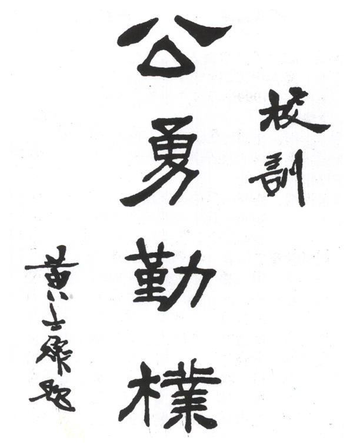

一中简介
|
历史沿革
|
校园风貌
|
校园生活
|校友风采|
返回首页
校友风采
党、政、军界
毛泽东
原中共中央主席、中华人民共和国主席、中共中央军委主席
朱镕基
原中央政治局常委、国务院总理
历史学家，原
全国人大
常委会副委员长
熊清泉
原中共湖南省委书记
曹圣芬
原国民党中央常委，中央日报社社长
刘正
原中共湖南省委副书记、湖南省人民政府省长
朱克靖
原新四军政治部顾问、联络部部长
楚崧秋
原中央日报社社长
邝鄘
原
中国工农红军
高级将领，国民革命军军歌作者
谭作钧
中共辽宁省委常委、辽宁省副省长
欧长虹
解放军理工大学
校长，少将
------
---------------
教育、学术界
孟少农
汽车工程专家、
中国科学院
院士
廖山涛
数学家，中国科学院院士、
第三世界科学院院士
田奇镌
地质学家、古生物学家，中国科学院院士
唐稚松
计算机软件专家，中国科学院院士
陈述彭
遥感地学专家，中国科学院院士、
国际欧亚科学院
院士、第三世界科学院院士
陈庆云
化学家、中国科学院院士
陈希孺
数学家，中国科学院院士
丑纪范
气象学家，中国科学院院士
曹镛
化学家，中国科学院院士
欧阳平凯
生化工程专家，中国科学院院士
周宏灏
遗传药理学、临床药理学专家，
中国工程院
院士
蒋洪德
叶轮机械与动力工程专家，中国工程院院士
刘耕陶
药理学专家，中国工程院院士
谭靖夷
水电施工专家，中国工程院院士
曾广商
飞行器导航与控制技术专家，中国科学院院士
朱之悌
林木育种学家，中国工程院院士
黎澍
历史学家，原
中国现代史学会
会长
黄仁宇
历史学家，明史专家
周策纵
红学家，历史学家
郭道晖
清华大学
教授，法学家
杨小凯
经济学家，
澳大利亚社会科学院
院士
戴宏杰
纳米技术专家，
美国国家科学院
院士
文艺界
周立波
作家、编译家
谭盾
音乐家，曾获
奥斯卡奖
大兵
相声演员
康濯
作家、原湖南省文联主席
龙伟华
军旅作曲家、国家一级作曲
-------
---------------
娱乐界
李湘
电视节目主持人
-------
---------------